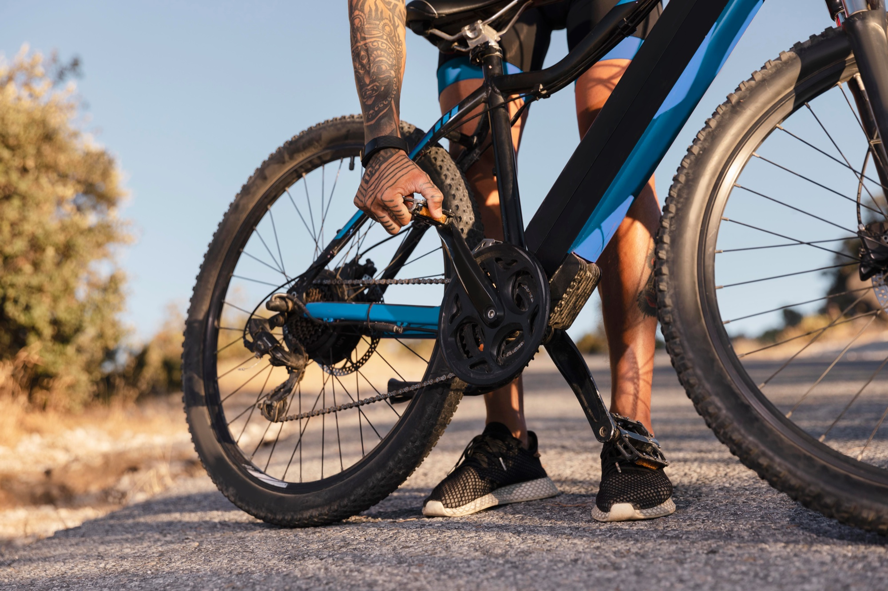
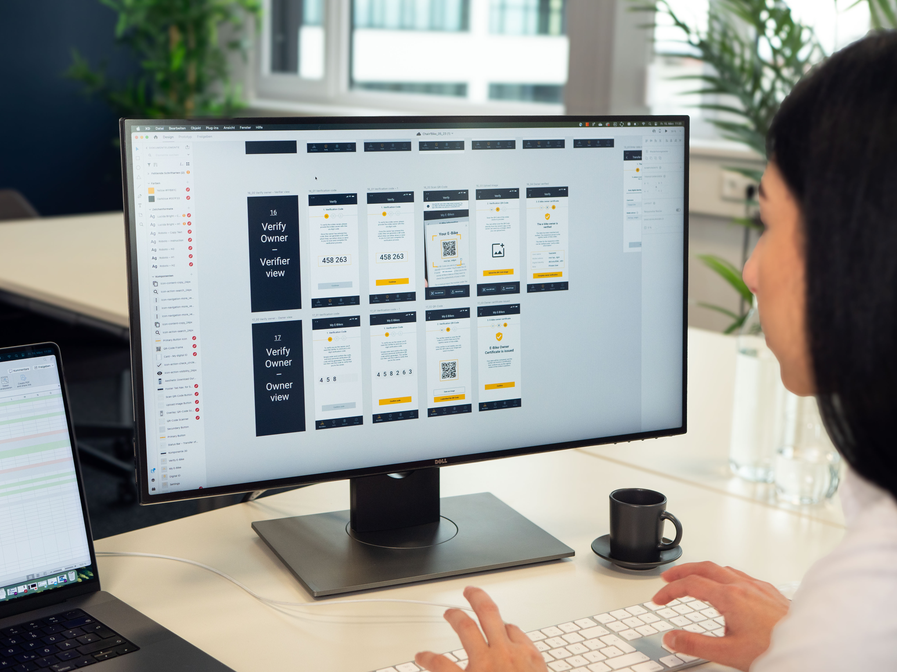
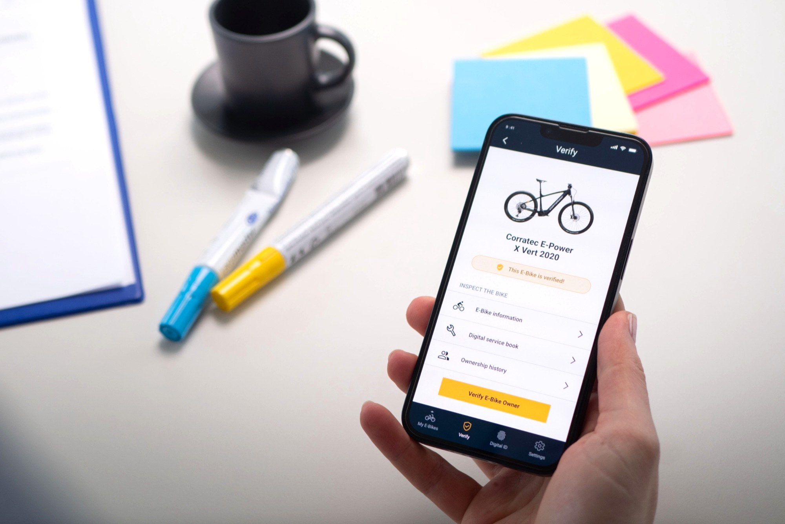
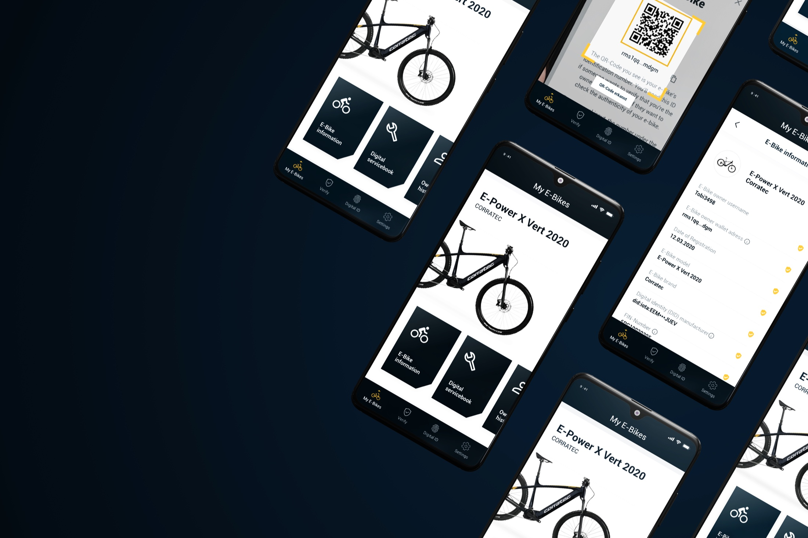

A decentralized App making e-bike ownership transparent, with a blockchain-based tamper-proof digital logbook and secure peer-to-peer ownership transfers.

Buying or selling a used e-bike often comes with uncertainty: there's no verified history of ownership, maintenance, or accidents. Akkodis wanted to solve this with blockchain, but the real challenge was making complex decentralised technology accessible to everyday users who don't know what a blockchain is. The design had to communicate security and trust without relying on technical jargon.

Initial user research and journey mapping was handled from a colleague. I onboarded with a thorough review of the findings and the blockchain architecture to understand both user needs and the technical constraints shaping the design space.

We defined the three core user flows: registering a bike, viewing and maintaining the digital logbook, and completing an ownership transfer. The design challenge was abstracting blockchain complexity into familiar, trustworthy interactions.

We created the Chain²Bike logo, a modular design system, and all interface screens. The visual language based on the AKKODIS CI prioritises clarity and trust, using neutral tones and clean typography to communicate security without intimidating non-technical users.

A clickable prototype was developed and evaluated internally. Feedback focused on the ownership transfer flow and the readability of the logbook, and both were refined based on the results to achieve the clearest possible experience.
The Chain²Bike dApp gives users a full view of any registered e-bike's history, including previous owners, maintenance records, and workshop visits, all secured by blockchain. Selling a bike is just as simple: the ownership transfer happens directly between parties, transparently and without middlemen. The design keeps the technology in the background so users experience security and simplicity first. The prototype became after more iterations a reference project for internal innovation at Akkodis.


BIRD Education Platform

Langenscheidt Language Coach

Little Food Fighters